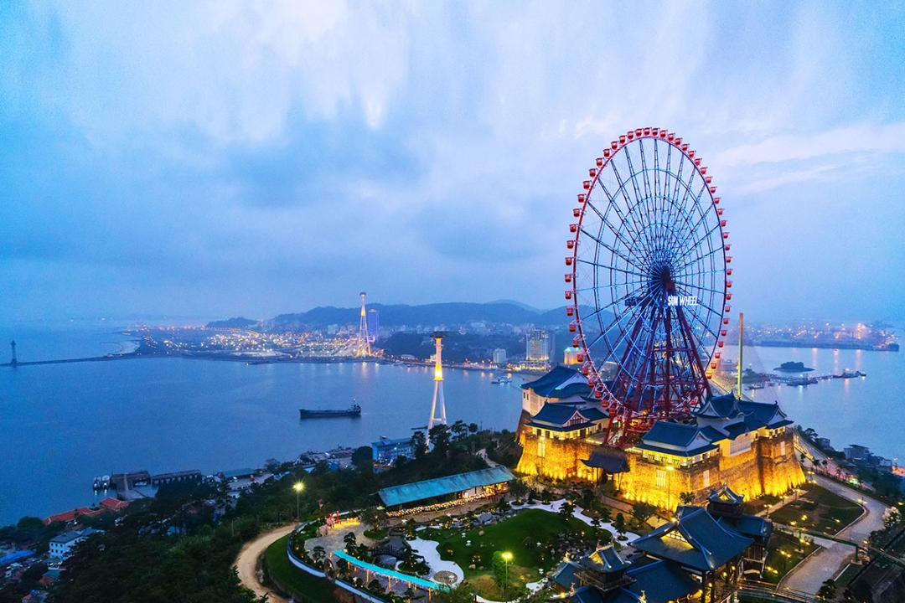
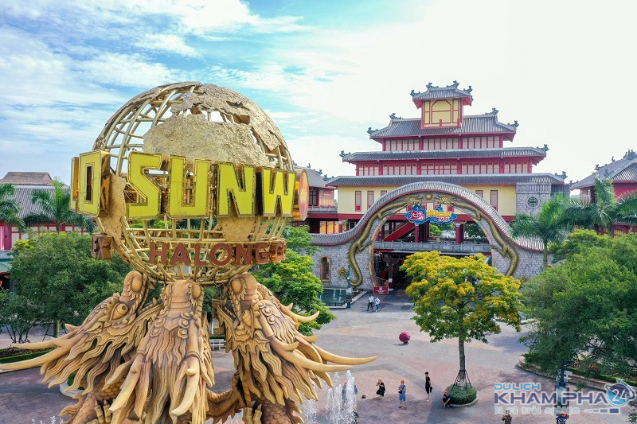

Vẻ đẹp thiên nhiên
Sun World Ha Long là một trong những khu vui chơi giải trí lớn nhất miền Bắc, thu hút hàng triệu lượt khách mỗi năm. Với vị trí đắc địa tại thành phố Hạ Long, nơi đây trở thành điểm đến quen thuộc của du khách trong và ngoài nước.

Trong chiến lược phát triển mới, nhiều hạng mục tại khu vui chơi sẽ được cải tạo và nâng cấp nhằm mang đến những trải nghiệm hiện đại hơn cho du khách.
Các khu trò chơi cảm giác mạnh, công viên nước và hệ thống dịch vụ sẽ được đầu tư đồng bộ, hướng tới tiêu chuẩn giải trí quốc tế và phục vụ du khách quanh năm.

Sau khi hoàn thành nâng cấp, Sun World Ha Long được kỳ vọng trở thành tổ hợp giải trí hoạt động liên tục 24 giờ mỗi ngày, kết hợp vui chơi, mua sắm, ẩm thực và các chương trình biểu diễn nghệ thuật đặc sắc.
Dự án không chỉ góp phần nâng cao chất lượng du lịch của Quảng Ninh mà còn tạo thêm sức hút cho thành phố Hạ Long, giúp địa phương tiếp tục khẳng định vị thế trung tâm du lịch hàng đầu Việt Nam.
← Quay lại Tin tức